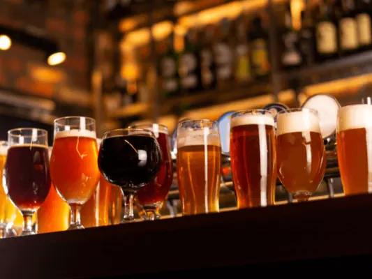
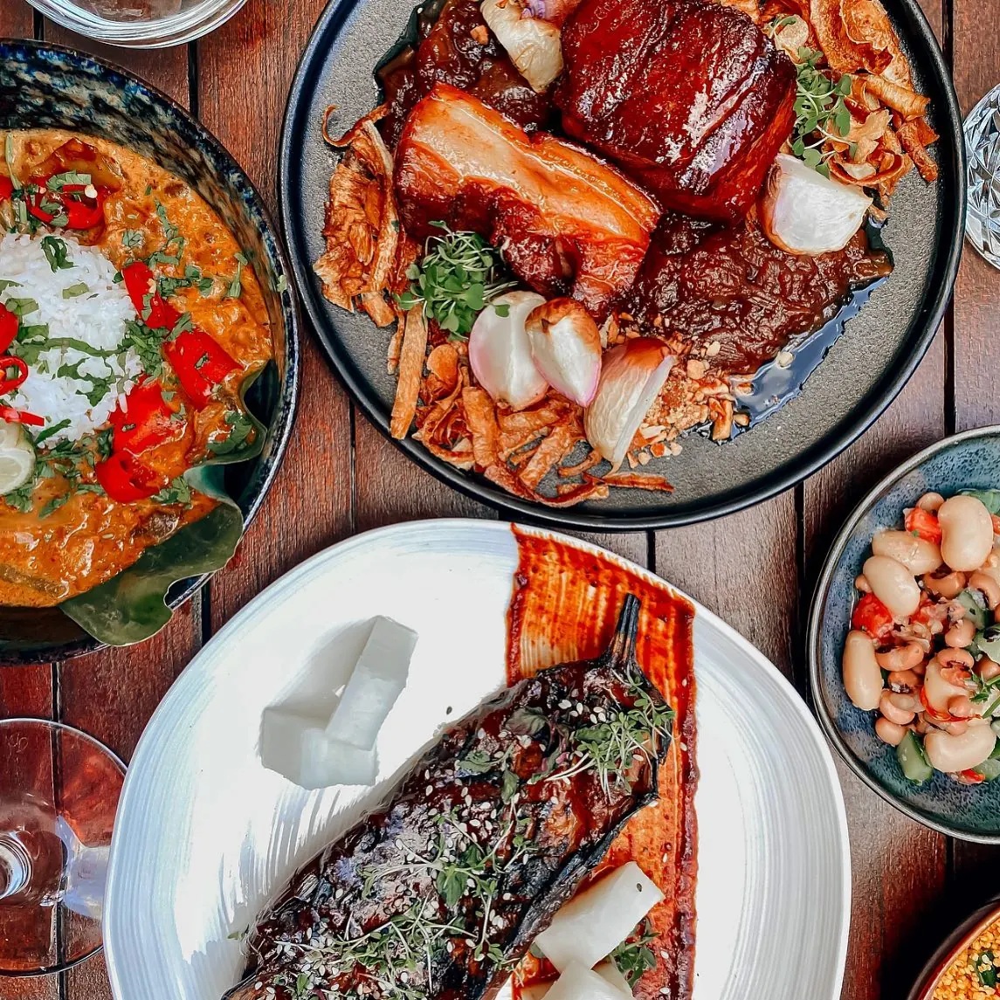

Gids
Uitgaan in Nijmegen: kroegen, clubs en bars
Nijmegen is een studentenstad met 64 cafés in de bedrijvengids, van bruine kroegen uit de zeventiende eeuw tot cocktailbars en biercafés met honderd soorten op de kaart. Het uitgaansleven speelt zich af rond de Grote Markt, de Molenstraat en de Waalkade, met Doornroosje en Merleyn voor wie wil dansen. En in juli is de hele binnenstad zeven dagen lang één feest tijdens de Vierdaagsefeesten.
In deze gids staan de pagina's over uitgaan bij elkaar: kroegen, bars, clubs, eetcafés en livemuziek.
Kroegen en biercafés
De cafés met de meeste historie, de beste biercafés en een avond happen en stappen door de binnenstad.

Lekker uitgaan in Nijmegen, hier doe je dat
Een avondje stappen in Nijmegen? Dit zijn de leukste plekken om uit te gaan, van kroegen op de Waalkade tot dansen en live muziek.

De 7 cafés met de meeste historie van Nijmegen
Proef de geschiedenis van Nijmegen in de oudste cafés van de stad, van In De Blaauwe Hand tot Café Samson. Dit zijn de 7 met het mooiste verhaal.

De 8 beste biercafés van Nijmegen
Speciaalbier drinken in Nijmegen? Dit zijn de 8 beste biercafés van de stad, van Café Jos tot De Hemel, met veel lokale biertjes.

Happen & Stappen in Nijmegen – Een Wereld aan Mogelijkheden
Wandelen en onderweg eten bij de beste restaurants: zo werkt happen en stappen in Nijmegen, met routes en tips.
Dansen en livemuziek
Doornroosje aan het Stationsplein heeft clubavonden als Planet Rose, Merleyn aan de Hertogstraat is het pop- en danscafé van de stad, en veel kroegen hebben livemuziek.

Concerten in Nijmegen
Waar zijn concerten in Nijmegen? Poppodium Doornroosje (1.100 en 400 bezoekers), Merleyn, Brebl, De Vasim, Concertgebouw De Vereeniging en de grote…
Festivals in Nijmegen
Alle festivals in Nijmegen en omgeving op een rij: Vierdaagsefeesten, Valkhof Festival, Bevrijdingsfestival, Code Oranje, Music Meeting, Go Short en…
Vierdaagsefeesten Nijmegen 2027
Vierdaagsefeesten (Zomerfeesten) 2027 in Nijmegen: 17 t/m 23 juli. Alle podia en locaties, tijden, Roze Woensdag, polsbandje, bereikbaarheid en parkeren.
Eetcafés en buiten het centrum
Eerst eten, dan stappen: de leukste eetcafés, tapas, en de gezelligste cafés in de wijken buiten het centrum.

Dit zijn de 6 leukste eetcafés van Nijmegen
Lekker eten in een gezellige sfeer? Dit zijn de 6 leukste eetcafés van Nijmegen, voor een betaalbare maaltijd met een drankje erbij.

Tapas eten in Nijmegen, hier kan je dat doen!
Zin in tapas? Dit zijn de beste tapasrestaurants in Nijmegen, ook voor onbeperkt tapas met een groep vrienden of collega's.
De 7 gezelligste cafés buiten het centrum van Nijmegen
Even weg van de drukte? Dit zijn de 7 gezelligste cafés in de wijken van Nijmegen, perfect na een wandeling door de stad.
Praktisch
Hoe je thuiskomt en waar je parkeert: het station ligt op een kwartier lopen van de Grote Markt, en 's nachts parkeer je in de garages voor € 0,50 per uur.

Station Nijmegen
Alles over station Nijmegen: welke treinen er stoppen, de verbouwing tot 2028 met nieuw perron en westentree, fietsenstallingen, parkeren en de weg…

Parkeren in Nijmegen
Parkeren in Nijmegen: alle parkeergarages in het centrum, tarieven op straat, de P+R en waar je gratis of goedkoop parkeert. Bijgewerkt voor 2026.
Andere gidsen: eten, drinken en cultuur
Veelgestelde vragen
Waar ga je uit in Nijmegen?
Rond de Grote Markt, de Molenstraat, de Lange Hezelstraat en de Waalkade zitten de meeste kroegen en bars. Dansen doe je in Doornroosje aan het Stationsplein en Merleyn aan de Hertogstraat.
Welke clubs heeft Nijmegen?
Doornroosje organiseert clubavonden, waaronder Planet Rose, sinds 1995 de langstlopende clubavond van Nederland. Merleyn is het pop- en danscafé in de binnenstad. Daarnaast zijn er clubs en danscafés in het centrum; zie de cafés in onze bedrijvengids.
Hoe laat sluiten de cafés in Nijmegen?
Dat verschilt per café; veel kroegen in de binnenstad zijn in het weekend tot diep in de nacht open. Tijdens de Vierdaagsefeesten stopt de muziek op straat om 00.30 uur, op vrijdag om 01.00 uur.
Wat is het bekendste biercafé van Nijmegen?
Nijmegen heeft meerdere biercafés met een grote kaart; de acht beste staan op onze pagina over biercafés.